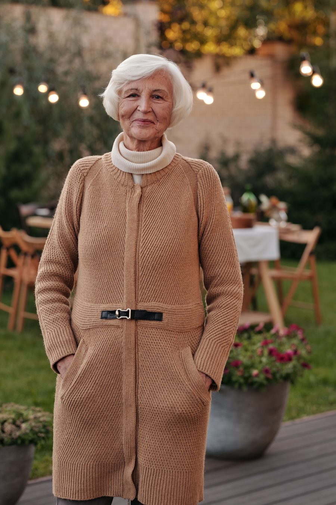
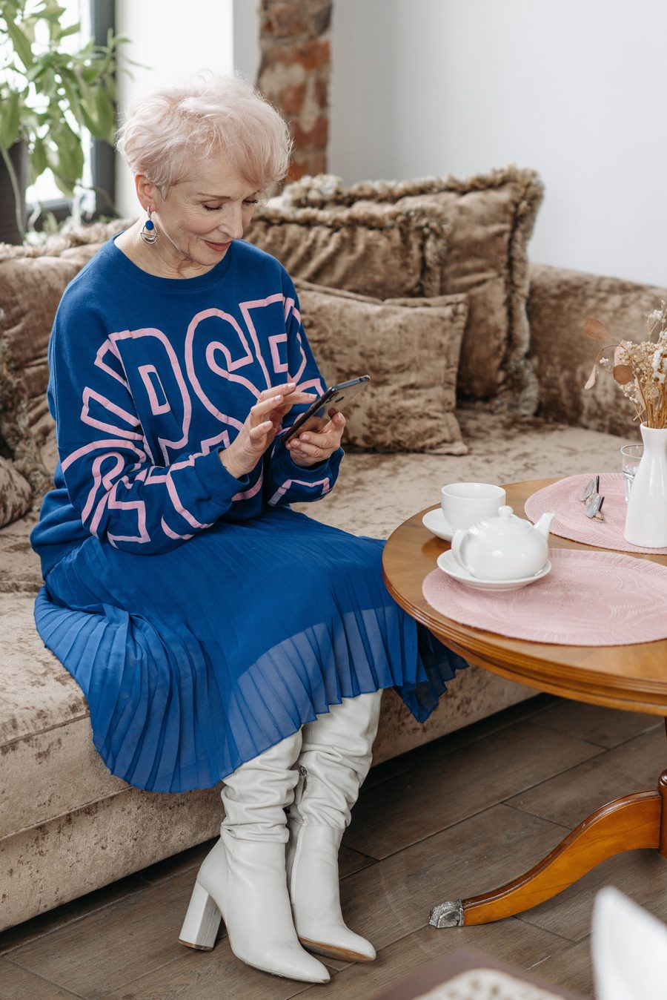

15 Tummy-Friendly Fall Outfits for Women Over 40 That Don't Look Frumpy
If your tummy is the first thing you think about when you get dressed, you are not alone — and you do not need to hide under baggy layers to feel confident. In fact, the baggy-layer approach is exactly what creates the "frumpy" look so many of us want to avoid. The secret the best-dressed women over 40, 50 and 60 know is this: flattering is not about covering more, it is about skimming, structure and proportion. A top that glides over the middle, a layer that creates a long vertical line, trousers that sit smoothly at the natural waist — these small choices do more than any oversized sweater ever will.
Below are 15 complete fall outfit formulas built on those principles. Every one of them works whether you are 42 or 68, because they are based on shape and proportion, not trends. Save this page, try two or three formulas with pieces you already own, and notice how much more polished you feel.
1. The Wrap Top + Straight-Leg Jeans
The wrap top is the single most tummy-friendly top ever designed. The diagonal line draws the eye across the body instead of straight at the middle, the V-neck lengthens your torso, and the tie defines your waist at its narrowest point. Pair a rust, burgundy or forest-green wrap top with dark straight-leg jeans — straight legs balance the hips better than skinnies and look far more modern — and finish with pointed ankle boots to extend the leg line.
2. Column Dressing: All One Colour + a Long Layer
Wearing one colour head to toe — say, a charcoal knit top with charcoal trousers — creates an unbroken column that visually lengthens and slims the whole body, tummy included. Add a long open cardigan or duster in the same family of tones and you get a second vertical line down the centre front. This is the outfit to reach for on days you want to think about your clothes the least and look the most put-together.
3. The Half-Tuck + High-Rise Trousers
A loose sweater worn completely untucked can add visual bulk right at the tummy. Instead, tuck just the front centre of the sweater into high-rise trousers — the famous "French tuck." It defines the waist, lets the sides drape softly over the hips, and instantly looks intentional rather than accidental. Choose trousers with a smooth flat front and a little stretch, in navy, chocolate or black.
4. A-Line Sweater Dress + Knee-High Boots
A sweater dress that fits at the shoulders and flares gently from under the bust floats straight past the tummy — nothing clings, nothing pulls. Look for a ribbed knit with some weight to it, in a midi length. Knee-high boots underneath close the gap, keep you warm, and give the whole outfit a polished, deliberate finish. Add a long pendant necklace to create that helpful vertical line.
5. Structured Blazer + Dark Denim
A blazer with real structure — defined shoulders, a nipped-in waist, a length that ends mid-hip — does the shaping work for you, so whatever you wear underneath can be simple and comfortable. Wear it open over a plain tee or camisole with dark denim. The two vertical edges of the open blazer frame the body and draw the eye up and down, never across the middle.
6. Empire-Waist Midi Dress + Denim Jacket
An empire waist sits just under the bust — the narrowest point on most bodies — and then flows away from the tummy entirely. A floral or small-print midi dress in this shape is fall perfection with a cropped denim jacket on top. The jacket must end at the waist, not the hip: a shorter top layer is what keeps a flowy dress from looking shapeless.
7. Monochrome Black + a Statement Scarf
Black on black is the oldest slimming trick there is, but the modern way to wear it is to mix textures — matte knit, smooth trouser, suede boot — so it looks rich instead of flat. A printed scarf worn long and loose at the neck adds colour near your face and creates yet another vertical line down the front. Comfortable, elegant, and it takes four minutes to assemble.
8. Peplum Top + Slim Trousers
A well-cut peplum — fitted through the bust and waist, then flaring softly over the tummy and hips — is camouflage and definition in one piece. The key is that the flare starts at your natural waist and the fabric has body; a flimsy peplum collapses and clings. Pair with slim ankle trousers and a heel or pointed flat to keep the proportions balanced.
9. Long Cardigan + Belted Waist

Take the long cardigan from outfit 2 and add a medium-width belt over it, worn at the natural waist. The belt stops a long layer from reading as "hiding," and turns it into a deliberate, shaped silhouette. Wear it over a simple column of a tee and straight trousers. This is also a wonderful way to make older cardigans in your wardrobe look new again.
10. Tunic Sweater + Leggings, Done Right
Yes, you can still wear leggings after 40 — the rules are simply coverage and structure. The tunic must cover the tummy and hips completely and end mid-thigh, the leggings should be thick ponte rather than thin jersey, and the shoes need some presence: a chunky loafer, a tall boot, or a clean sneaker. Add a crossbody bag worn diagonally for an extra slimming line.
11. Shirt Dress + Ankle Boots
A shirt dress with a self-belt worn slightly above the natural waist gives you structure at the top and an easy A-line skirt below — nothing presses on the tummy all day. Leave the top two buttons open to create a V, roll the sleeves to the forearm (showing the slimmest part of the arm is a stylist's favourite trick), and wear with ankle boots.
12. V-Neck Sweater + Satin Midi Skirt

A satin or slip midi skirt skims over the tummy and hips without a waistband digging in — choose one with an elastic back waist for all-day comfort. Half-tuck a soft V-neck sweater at the front. The contrast of cosy knit against fluid satin looks expensive, and this outfit moves beautifully from lunch to dinner with a change of shoes.
13. Trench Coat as the Outfit
On mild fall days, let a classic trench do all the work. Belt it loosely at the waist over a simple knit and trousers — the trench's structure, lapels and vertical storm flap create shape and length in one step. It is the ultimate anti-frumpy layer because it always looks deliberate, tailored and finished, even over the plainest clothes.
14. Dark Floral Blouse + Bootcut Jeans
A small, dark-based floral print is quietly brilliant at camouflaging the tummy — the eye reads the pattern, not the shape underneath. Choose a blouse with a V or scoop neck and a hem you can half-tuck. Bootcut jeans balance the hips and make legs look longer; they are back in style and far more flattering after 40 than the skinny jeans many of us are still holding onto.
15. Jumpsuit With a Defined Waist
A jumpsuit in a drapey fabric with a wrap or belted waist is a one-and-done outfit that creates a long, unbroken line. Look for wide or straight legs, a V-neckline, and — practically — a style you can get in and out of easily. Add a denim or leather jacket and it works for almost any fall occasion, from school runs to dinner with friends.
Final Thoughts
You do not need a new body or a whole new wardrobe to dress a tummy beautifully after 40 — you need a handful of formulas and the confidence to stop hiding. Start with the wrap top, the column of colour, and one structured layer. When you find the formula that makes you stand taller, buy it in two colours and wear it on repeat. That is not giving up; that is exactly how the most stylish women of every age actually dress.
Next, read: Winter Capsule Wardrobe for Women Over 50: 12 Pieces = 15 Outfits and How to Wear Cardigans Without Looking Frumpy Over 40. And if you have not yet, join the free email list on our homepage for the printable Tummy-Friendly Capsule Checklist.